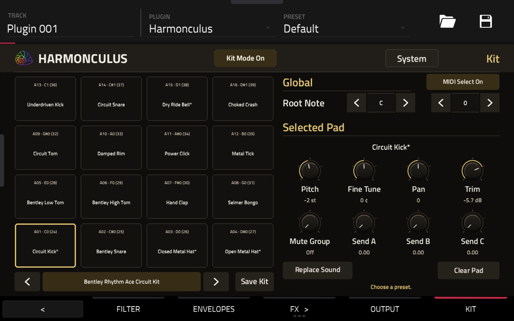

Harmonculus for MPC
A fresh take on
additive synthesis.
Start with a preset, or drop in a sample and turn it into an instrument. On desktop, mould the harmonics with your mouse in 3D, like sonic putty.
Try free for 14 days.

Payment processing and licensing services provided by Moonbase.sh.
Early Access costs £24 as a one-off purchase. The standard price after Early Access will be £49.
One purchase includes MPC and desktop (macOS, Windows and Linux).
Harmonculus for desktopInstrument presets
Explore 365 instrument presets, voiced and refined with care. The sounds take inspiration from Boards of Canada, Air and other artists we love.
All eight demos below use instrument presets, with no additional instruments or processing.
-
Driven Double Saw Bass
-
Hollow Whistle Sweep
-
Dub Strings
-
Round Filter Bass
-
Cathedral Strings
-
Beating Mallet
-
Tape Triangle Pad
-
Copper Weather
Kit Mode
Kit Mode is our love letter to the MPC. In the upcoming update, build a kit across Bank A’s 16 pads and play or sequence it on a single Plugin track. Shape each pad with its own Harmonculus sound, filter, envelopes and effects, then save the whole kit to use again.
Harmonculus already includes a dedicated library of 365 additional drum and percussion sounds, from acoustic hits and analogue drum-machine sounds to log drums, reverse cymbals and cinematic taiko.

Install from ZIP
Available for Gen 1 and Gen 2 standalone MPC. Use MPC OS 3.10.1 or later with External Plugin Support. Gen 1 owners can also use legacy RAW Loader on MPC OS 3.9.1.
Choose the Harmonculus 0.3.0 ZIP for your MPC. Both ZIPs include all 730 factory presets.
- Gen 1 MPC, including MPC One+ Download ARMv7 ZIP
- Gen 2 MPC Download AArch64 ZIP
Install with Akai External Plugin Support
On MPC OS 3.10.1 and later, unzip the download and copy the complete Harmonculus folder, including plugin.json, directly into VST2 Plugins at the root of your SD card or USB stick. Create VST2 Plugins if needed.
In Menu → Preferences → Enhancements, turn on Enable Enhancements and External Plugin Support. Save your project and restart MPC. Open Harmonculus from External Plugins on a Plugin track. Leave the drive connected while using it.
Install with RAW Loader
Use the legacy loader on Gen 1 with MPC OS 3.9.1 or the stock loader on MPC OS 3.10.1 and later. Copy the ZIP into RAW-MPC-Plugins at the root of your USB stick or SD card. Open USB Files in RAW Loader and install the ZIP. Save your project before restarting MPC.
Install online on your MPC
New to RAW Loader? Follow the setup guide for MPC OS 3.9.1 on Gen 1 or MPC OS 3.10.1 and later.
- Connect your MPC to the internet and open RAW MPC Plugin Loader on a Plugin track.
- Choose RAW Catalogue, select Harmonculus and tap Install or Update.
- Save your project, return to RAW and tap Continue, then Restart Now. Open Harmonculus on a Plugin track after restart.
Activate Harmonculus
Already own Harmonculus? Use your existing licence to activate on MPC.
Activate by QR code
Connect your MPC to the internet. In Harmonculus, open System and tap Activate by QR code. Scan the code with your phone, then follow the activation prompts to start your free 14-day trial or select a Harmonculus licence with an available activation.
Once your paid licence is activated, it stays active on that MPC permanently. You can play offline with no further sign-ins or online licence checks.
Activate without connecting your MPC to the internet
- Insert just one USB stick or SD card. In System, tap Export Device File to save
Harmonculus.dtto the drive. - On another device with internet access, upload
Harmonculus.dtto the Ruminant Audio Works activation page. Save the licence it gives you asHarmonculus.mbat the top level of the drive. - Return the drive to the MPC and tap Import Licence File in System.
Payment processing and licensing services provided by Moonbase.sh.